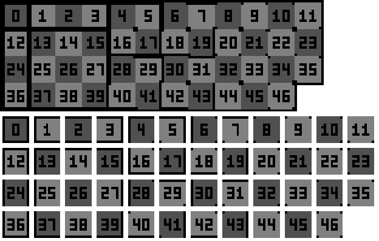
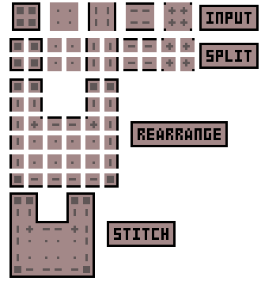
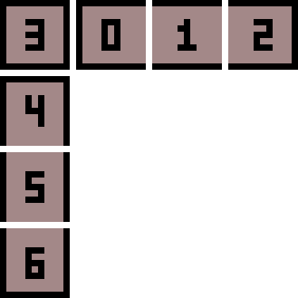
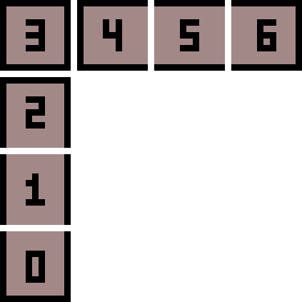

CTM guide
CTM is connected and varied block textures like glass that merges with its neighbors, logs that look
like one trunk, stone that doesn't repeat itself, etc.
Everything is almost identical to OptiFine/MCPatcher CTM, so packs made for
those port with little more than moving files.
#
CTM is created without code and works from both mods and resource packs, a pack's file overrides the mod's one.
It works on blocks only, so no CTM on items or entities.
Every method works on every block except for liquids: a method looks at neighbors, not at what is drawn. A plant is one west face, so vertical and top are what it has most use for, and horizontal looks along z. The one exception is compact. Its tiles are cut for a cube's face: on a texture a plant or a model shows it logs compact ctm doesn't support custom models and stops the game. Use full ctm, or keep it off them with blocks =.
A tile can also be a model.
Examples to copy from are in mods/base/assets/textures/block/: glass/, stone/, iron_ore/.
Check textures guide for more texturing options like overlays, glow and animation.
#
#
A texture with CTM is a folder instead of a picture: the rules <name>.ctm and the tiles go in <name>/, and blocks keep naming it glass as before.
Base mod example: #
assets/textures/block/
glass/glass.ctm <- the rules
glass/0.png <- the tiles the rules point to
glass/1.png
...Where nothing connects it (an item, breaking particles, distant terrain, a face no rule is for), the texture is the tile a block alone gets: tile 0 (all edges for ctm and compact, the first one for random, repeat, fixed and top), tile 3 (both ends) for horizontal, vertical, h+v and v+h. So there is no glass.png beside the folder; one mod or pack with both stops the game.
The rules apply to every face that shows this texture on any block.
For example if a block uses glass texture as one of the faces, it will get the same CTM as glass block for that face.
A mod can only add rules for its own textures.
A resource pack can add them for any mod's texture, since packs keep files in a folder per namespace:
the base game's glass is <pack>/base/textures/block/glass/glass.ctm with its tiles beside it.
A pack that has a plain glass.png turns the mod's rules for it off: you get your picture as it is. A pack's folder goes over a mod's picture or folder, and a pack replacing only glass/0.png keeps the mod's rules with its own tile.
The file uses key = value lines.
Comments are whole lines starting with #. A # after a value is a part of that value, so don't do it.
A file can hold several rules, each new one starts with a line [any text] as a separator, the text inside doesn't matter.
The first rule whose conditions pass for the face wins, so put specific ones first.
#
method #
What the tiles mean and how many are needed. Default is ctm.
values: ctm, compact, horizontal, vertical, h+v, v+h, top, random, repeat, fixed
(also accepted: glass, bookshelf, sandstone, pattern, static, horizontal+vertical, vertical+horizontal, ctm_compact)
example: method = compact
tiles #
Which textures the method uses, in order.
A name is a file in the folder (a full namespace:path also works).a-b at the end of a name expands to numbers: 0-4 is 0 1 2 3 4.
examples:tiles = 0-4tiles = 3 1 2tiles = 0 1 2 3
A tile with a model file of the same name is that model, see models as tiles.
If there are fewer tiles than the method needs, the rule is skipped and the log says needs N tiles, has M.
connect #
What counts as "a neighbor" for the connecting methods.
values:tile: the neighbor shows this texture on that face, whatever block it is (default)block: the neighbor is the same blockstate: the neighbor is the same block state
example: connect = block
faces #
Which faces of a block the rule works on.
values: all (default), top, bottom, sides, north, south, east, west, any of them separated by spaces
example: faces = sides
inner_seams #
If the neighbor's face is covered by another opaque block, that neighbor doesn't connect.
Default false, glass uses true.
values: true, false
blocks #
Only for these blocks, separated by spaces. Written like blocks are named anywhere else: a full name, a state (base:furnace[lit=true]), a tag (#logs, #ores/*), and ! before any of them to leave it out. A name nothing has is reported in the log with the file.
example: blocks = #logs !base:oak_log[axis=y]
heights #
Only inside these world heights (Y of the block).
example: heights = 0-40 100-
(100- means from 100 up, 0-40 up to 40)
biomes #
Only in these biomes, by name or by tag. A ! in front turns the list around.
examples:biomes = base:desert base:beachbiomes = #coldbiomes = !base:desert
weights #
For random: how often each tile appears, in the order of tiles. Missing ones get the average.
example: weights = 4 2 2 2
symmetry #
For random: do faces of one block get the same tile?
values: none (default), opposite (opposite faces share it), all (all six faces share it)
width and height #
For repeat: the size of the pattern in blocks, tiles go left to right, top to bottom.
example: width = 2 and height = 2 with four tiles
#
ctm #
Every neighbor of the 8 around the face decides which of 47 tiles is shown. Requires exactly 47 tiles, the most versatile and the most size-heavy method.
Tile numbers (the same as OptiFine's template), so tile 0 is the file 0.png and so on. Each tile shows the face with the edges where it does not connect to a neighbor:

Tile 0 is the face alone, with no neighbors. Draw each file as the picture shows: a dark border on the sides that have no neighbor, a dark dot in a corner where both sides connect but the diagonal one doesn't.
compact #
Same result as ctm from only 5 tiles, the other 42 are built when the game loads. Each face is split into 4 quadrants, and every quadrant takes one of the 5 tiles depending on its two edges and the diagonal:
| tile | when the quadrant is... |
|---|---|
| 0 | alone (all borders) |
| 1 | connected on all sides (no borders) |
| 2 | vertical lines only |
| 3 | connected left and right only |
| 4 | an inner corner: both sides connect but the diagonal doesn't |
Here is how 4 quadrants of the input become a stitched result, on a 3x3 pattern with a cutout:

One limit: a quadrant is half the tile, so an edge or a corner can't be wider than half of it (8x8 pixels on a 16x16 texture). Textures with thicker borders need full CTM. Check mods/base/assets/textures/block/glass/ for a real example.
horizontal, vertical #
4 tiles. Connects only left-right (or up-down), like bookshelves or logs.
horizontal, seen from the front:
vertical, seen from the front:
h+v, v+h #
h+v, the extra tiles go down the left column:

v+h:

top #
2 tiles: the plain one, and the one side faces use when the same block is above them (sandstone-like). Top and bottom faces use the plain one.
random #
Picks a tile from the position, so the same block always looks the same.
Any number of tiles, see weights and symmetry for more values.
repeat #
A pattern of width x height tiles that continues across blocks, tiles go row by row.
Needs width * height tiles.
fixed #
always 1 tile. Handy together with blocks, heights or biomes to swap the texture there.
#
A tile doesn't have to be a picture. If models/block/<tile>.json exists, a Java block model the way Blockbench exports it, that tile redraws the whole block, whatever shape it had before. Every method can pick one, and every block can get one.
A random cactus, one in five with a flower or a branch:
textures/block/cactus_side/cactus_side.ctm
textures/block/cactus_side/0.png <- the plain side
textures/block/cactus_side/1.png <- an unwrap, any size
models/block/cactus_side/1.json
...cactus_side.ctm:
method = random
tiles = 0-3
weights = 12 1 1 1The method chooses the tile and the model shows its picture: a face the file gives no texture shows the picture named like the tile (textures/block/cactus_side/1.png), else the texture the rules belong to. A file can name its own textures as usual, each face with its uv on them, in a model's 0 to 16 across the picture however big it is. Fractions are fine down to 1/8, that's what an unwrap on a 64x64 or 128x128 texture comes down to. The edge of a part can bleed a screen pixel into what is next to it on the picture, so leave a pixel of margin in the same color. A tile without a model file (0 here) keeps the block as it was.
Only the visual changes: collision, selection and light stay what the mod gave every player, since a server knows nothing of packs. Items show the block's plain model. A model is picked by its block's position, so symmetry has no say and all of its faces agree.
Model corners go by whole model pixels, a corner at 1.5 lands on 2.
hides_neighbors #
A block the mod made opaque keeps hiding the faces next to it. If a model leaves gaps in such a block, you would look through the world there, so say it does:
hides_neighbors = false
The faces next to any block the rule goes for are then drawn. It goes on any rule, a fixed one with tiles = 0 is enough for a models/block/<name>.json of a pack. Light still treats the block as solid, so those faces take their light from what is around.
#
Sugar cane #
reeds/reeds.ctm:
method = vertical
tiles = 0-3Glass #
glass/glass.ctm:
method = compact
tiles = 0-4
inner_seams = truewith glass/0.png ... glass/4.png beside it.
Logs that look like one trunk #
A pack's log_oak/log_oak.ctm:
method = vertical
tiles = 0-3
faces = sidesStone that doesn't repeat #
stone/stone.ctm:
method = random
tiles = 1-3
weights = 6 2 2Several rules in one file #
Only in deserts, a different one elsewhere:
method = fixed
tiles = smooth
biomes = base:desert
[the rest of the world]
method = random
tiles = 0 1 2#
The log says connected textures: N rules, M models, T textures, K generated when any rule is loaded.unknown method or needs N tiles lines name the file and the rule that was skipped, and a skipped
rule just shows the texture's alone tile.
A tile file that doesn't exist shows up as the "missing texture" pattern.